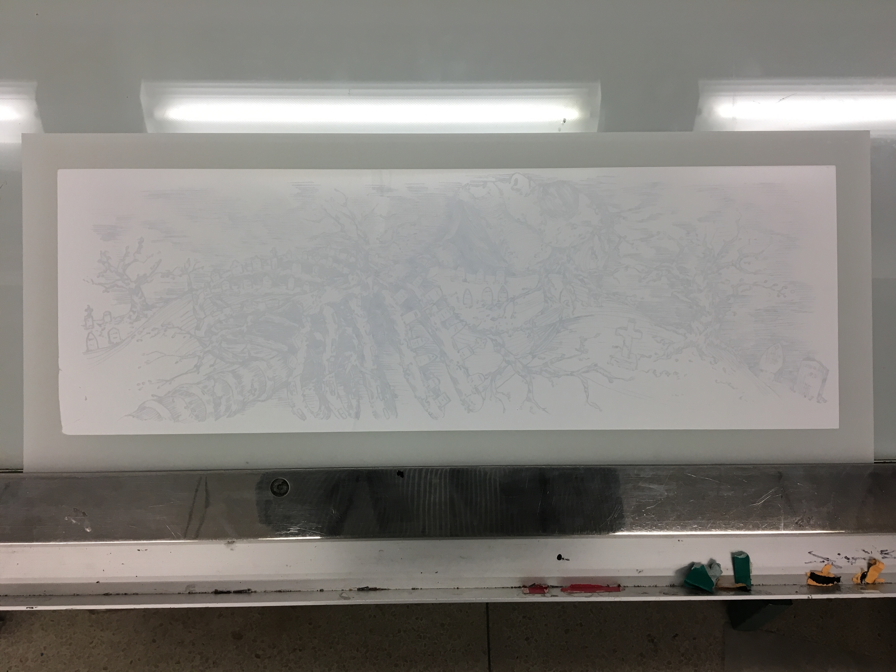
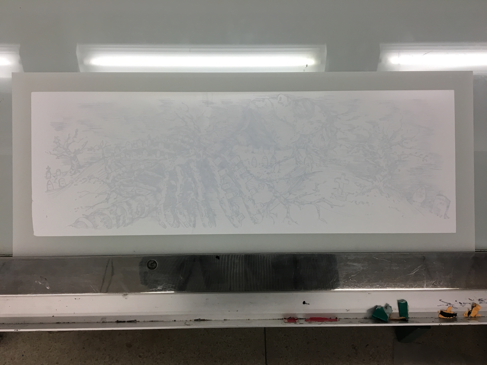

Exhibition, printing process
Digital images.
EXHIBITION IS AN EDITION OF PRINTS I made addressing visibility, the disinterment of people’s pasts, and the question of “who has the right to speak for others?”.¹ The themes and ideas within this work are heavily based upon my reading of Susan Sontag’s Regarding the Pain of Others.²
Below is a look at my printing process:


 


1. The Archive, Section 04, Folder A.
2. The Archive, Section 04, Hanger 01 + 02.
ITEM CODE: 04.A.03.D